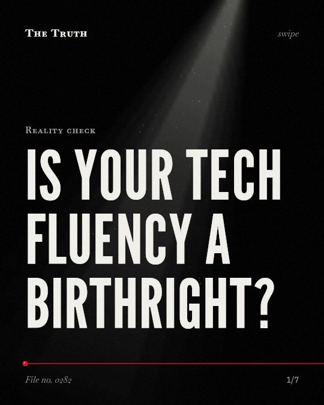

Reality check
Is your tech fluency a birthright?

The evidence does not compare adoption speeds.
There is no data provided to prove whether older adults or teenagers adopt platform mechanics faster. The research focuses on literacy, demographics, and well-being.
Established. Several studies combined, or official data. The evidence goes against the popular idea.
What the research found
Digital financial literacy and demographic factors including age, income, and occupation significantly explain digital financial inclusion in Indonesian households.
“Conversely, DFL and other demographic factors including age, income, occupation significantly explain DFI in Indonesian household.”
Study, 2024. Widyastuti et al., Cogent Business & Management.
Digital health literacy is linked to an older adult's ability to use technology to search, browse, understand, and evaluate health information.
“Implying digital health literacy on older adults also affects their ability to use digital technology to search, browse, understand, and evaluate health information to improve their health status.”
Review, 2024. Shi et al., Frontiers in Public Health.
Age, education, income, perceived health and social isolation are linked to internet access.
“Socio-demographic characteristics particularly age, education, income, perceived health and social isolation also predict internet access.”
Observational study, 2017. Estacio et al., Journal of Health Psychology.
There is a strong relationship between literacy skills and digital well-being among K-12 students.
“The findings demonstrate a strong relationship between literacy skills and digital well-being among K-12 students.”
Systematic review, 2025. Arkan & Bal, BMC Psychology.
Access depends on your life circumstances.
Internet access is linked to your age, education, income, and social isolation. Digital well-being is tied to literacy skills rather than just age or platform familiarity.
Digital skill is not an innate trait.
That may be why some people struggle with technology. It is not a generational gift. It is a result of your social support, your income, and your specific literacy needs.
This part is our reading of the evidence, not a finding.
A dinner table with three phones.
You watch your parents struggle to navigate a new app while you scroll effortlessly. You assume it is a lack of speed. The evidence suggests it is a lack of specific literacy or support.
The honest summary
The provided sources do not contain data comparing the speed of platform adoption between older adults and teenagers.
None of the sources provide comparative data on the rate of adaptation to social media interfaces between different age groups.
Is your ease with technology a birthright?
Sources
- Zeynep Arkan, Mazhar Bal (2025). The relationship between school-age students’ literacy skills and digital well-being: a systematic review. BMC Psychology. Systematic review, cited 32 times.
- Zhen Shi, Xixi Du, Juan Li et al. (2024). Factors influencing digital health literacy among older adults: a scoping review. Frontiers in Public Health. Review, cited 189 times.
- Emee Vida Estacio, Rebecca Whittle, Joanne Protheroe (2017). The digital divide: Examining socio-demographic factors associated with health literacy, access and use of internet to seek health information. Journal of Health Psychology. Observational study, cited 329 times.
- Umi Widyastuti, Dwi Kismayanti Respati, Vera Intanie Dewi et al. (2024). The nexus of digital financial inclusion, digital financial literacy and demographic factors: lesson from Indonesia. Cogent Business & Management. Study, cited 91 times.
Also read for this file, not quoted
This file was researched and drafted by software, then checked by rules a model cannot talk its way around: each quote above was matched word for word against the paper, and every number had to appear in it. How files are made.